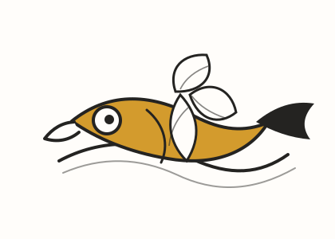
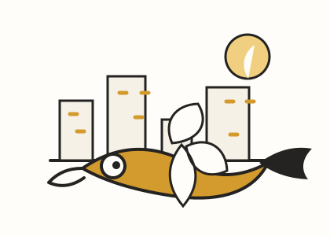
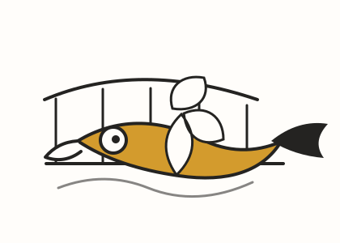

기억 방식
사진을 많이 붙이기보다, 장소마다 남은 색과 문장을 짧게 적어둡니다.
Travel sketchbook
여행지에서 본 색, 먹은 음식, 오래 기억하고 싶은 골목과 풍경을 스케치 조각처럼 정리합니다.

사진을 많이 붙이기보다, 장소마다 남은 색과 문장을 짧게 적어둡니다.
목적지보다 분위기와 기억을 중심으로 남기는 여행 기록입니다.

햇빛이 강한 오후, 바람과 물빛을 선 몇 개로 오래 기억하고 싶은 여행.

낯선 도시를 걷다가 발견한 조용한 카페와 불빛.

걷는 속도를 늦추게 만드는 골목과 다리의 리듬.